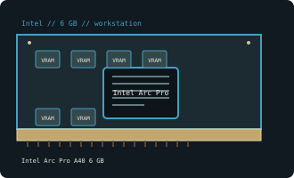

[ INTEL // INDIVIDUAL GPU RECORD ]
Intel Arc Pro A40 6 GB
2022; Xe-HPG ACM-G11; 8 Xe cores/1,024 vector engines.

Recorded specifications
| Catalog identity | Intel Arc Pro A40 6 GB |
|---|---|
| Model-specific specification | 2022; Xe-HPG ACM-G11; 8 Xe cores/1,024 vector engines; 6 GB GDDR6, 96-bit; PCIe 4.0 x8; 50 W; low-profile, four mini-DP. |
| Vendor-first catalog | Intel vendor directory |
| Model-family index | Intel vendor directory |
Compatibility and maintenance
Professional driver qualification differs from A380. Check low-profile bracket/cables and use Arc Pro-certified driver where software qualification is needed.
Sources & further reading
- Intel Arc Pro A40 specificationsModel/family technical or historical reference; confirm the exact board revision and OEM label.